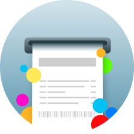
goDutch!
rachar a conta fácil
Grátis na App Store

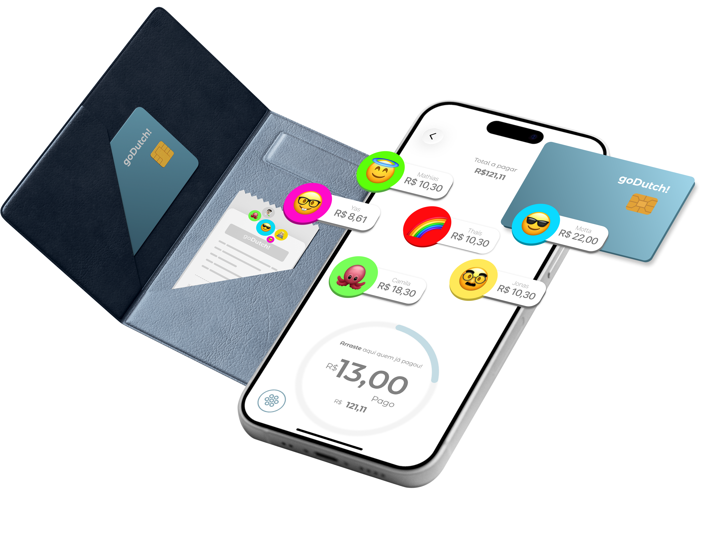
goDutch!
está com você na hora de dividir a conta do bar ou restaurante!
Escaneie a nota, marque o que cada pessoa consumiu e veja quanto cada um deve pagar, sem complicações.
Dividajustamente
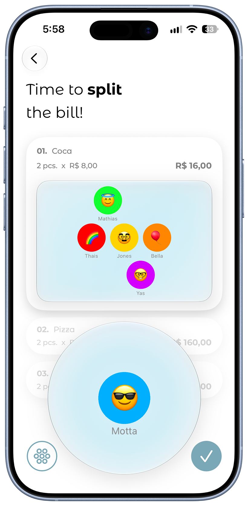
Adicioneseus amigos
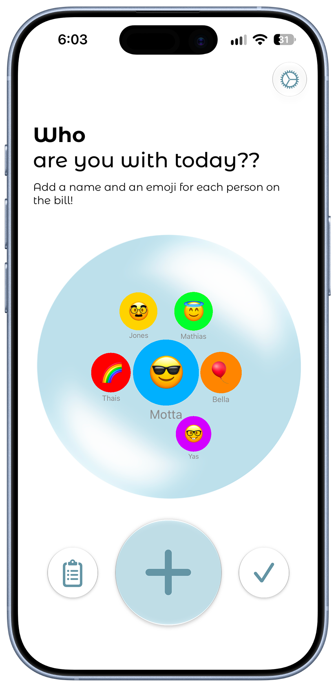
Escaneiea notinha
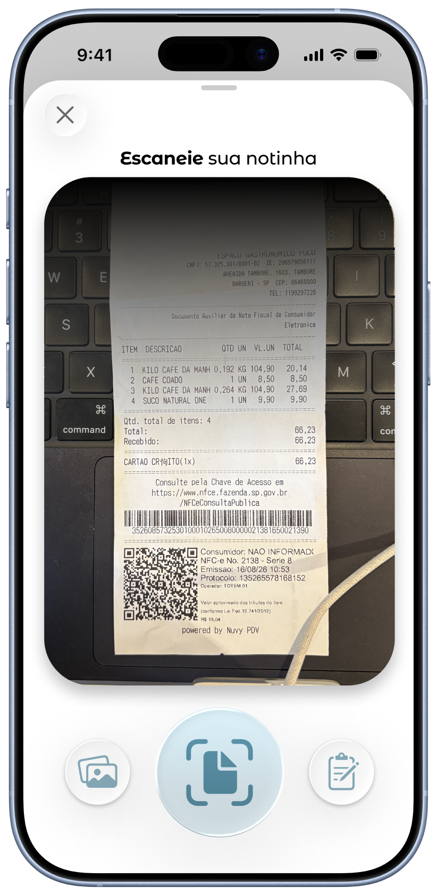
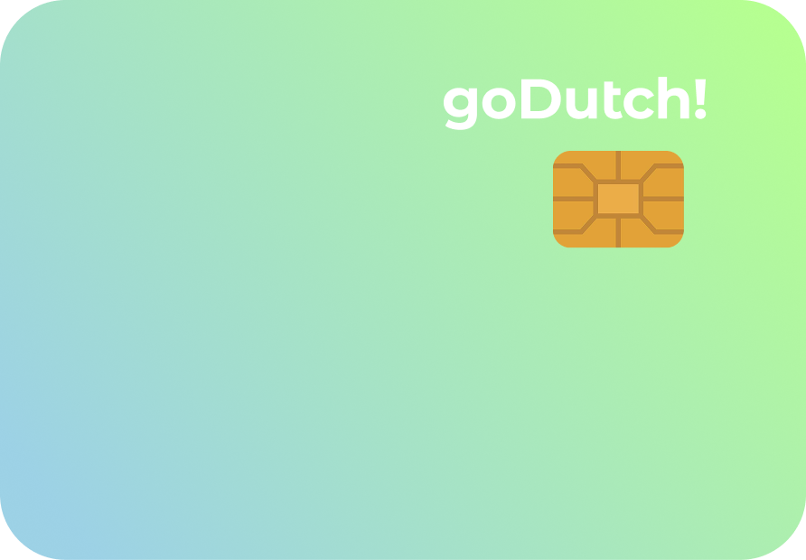
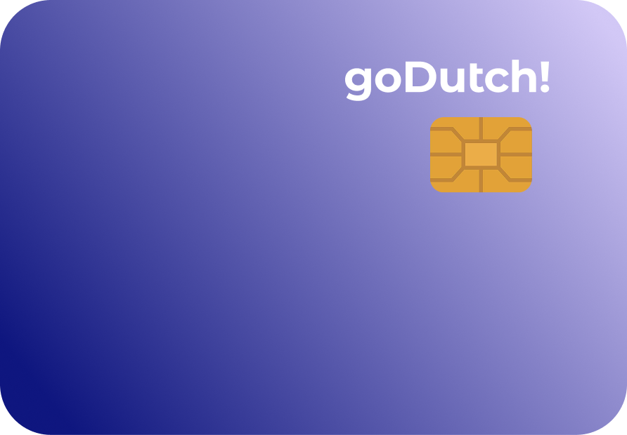
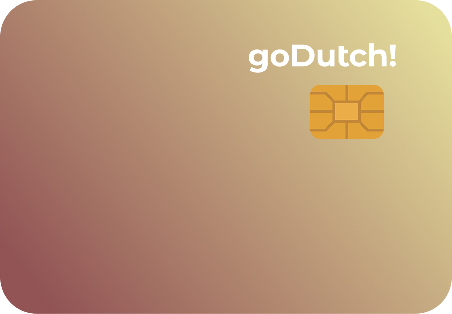
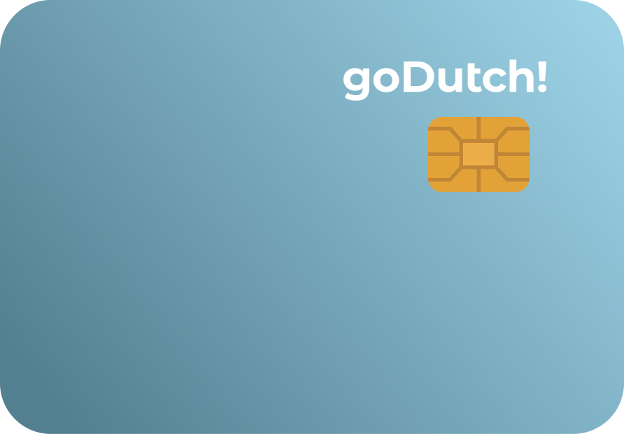
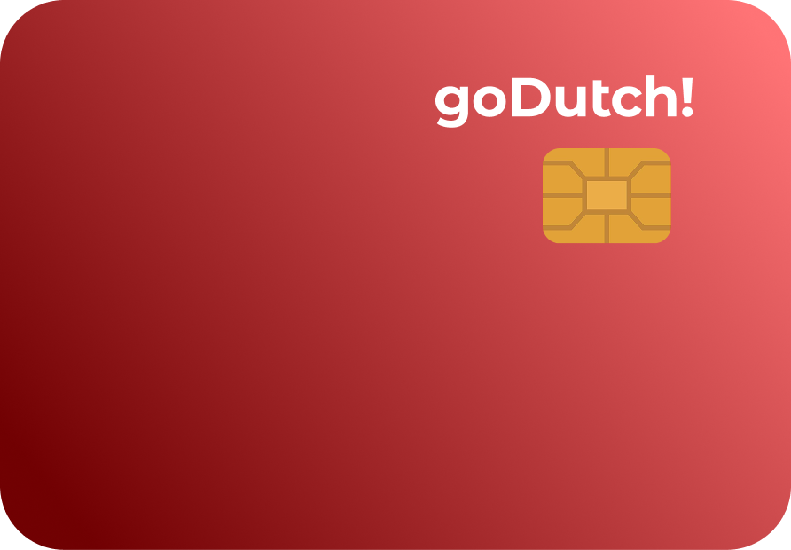
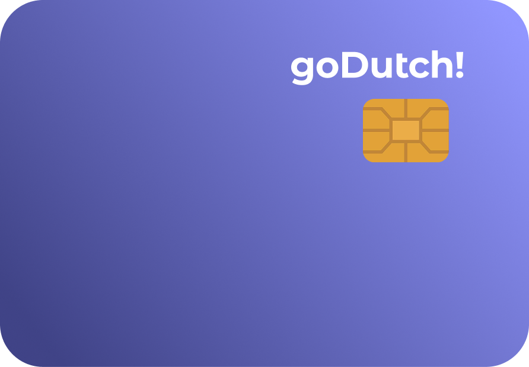
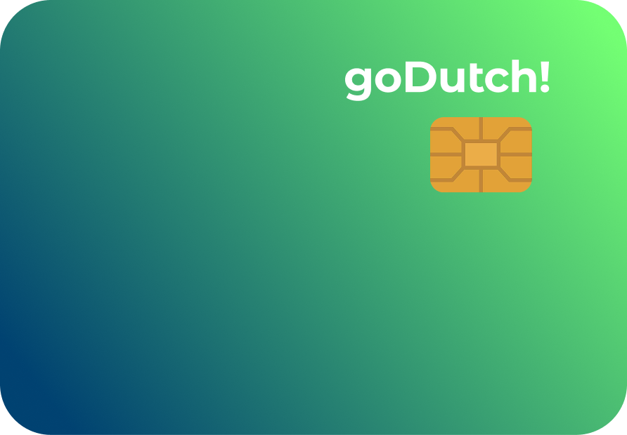
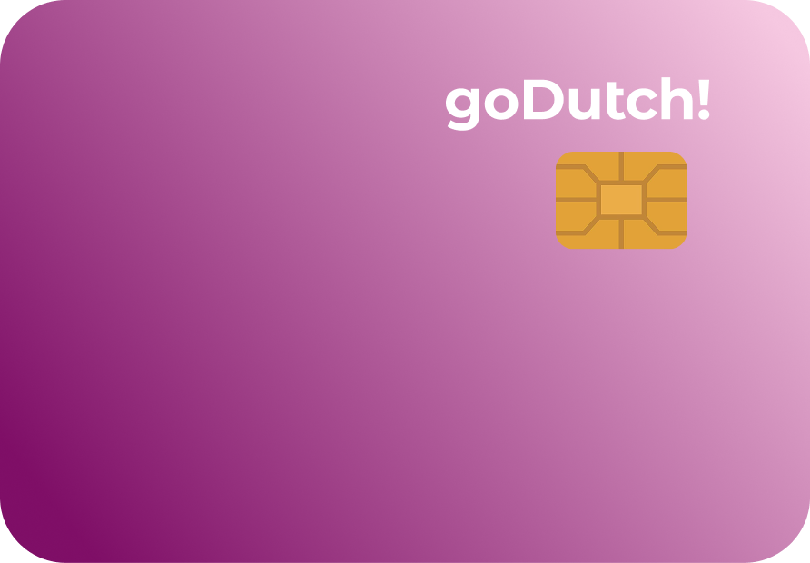
Arraste o cartão para finalizar
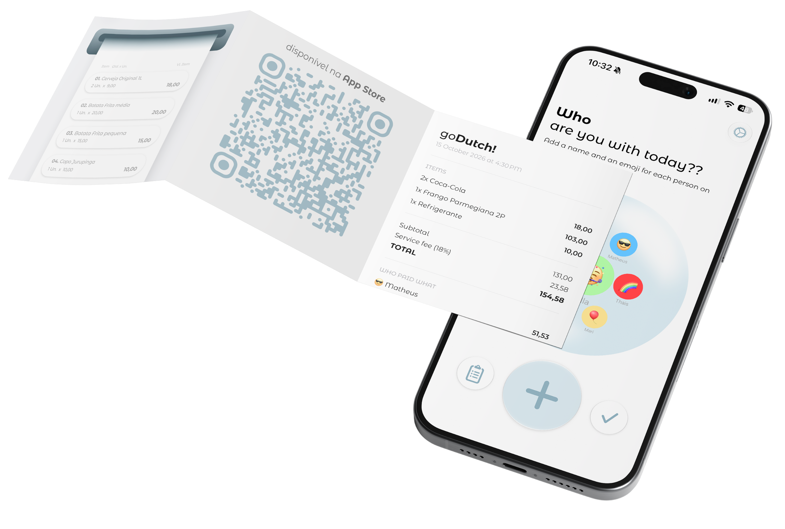
goDutch!
rachar a conta fácil
Grátis na App Store Baixe agoraPor que criamos o goDutch!
Todo mundo já viveu aquela hora que a conta chega, alguém sugere dividir tudo igual e, no fim, quem consumiu menos paga mais. Numa ida ao bar com os amigos, dissemos CHEGA!
Foi daí que veio a ideia do GoDutch, um app simples para dividir a conta de forma justa, sem calculadora e sem desconforto na mesa.
4
🐙
🤓
😎
🥸
Thaís · Developer@tatacanguçu
🐙
Camila · Developer@cparolin_
🥸
Yasmin · Developer@y.mendss
🤓
Matheus · Designer@matheusmotta_
😎